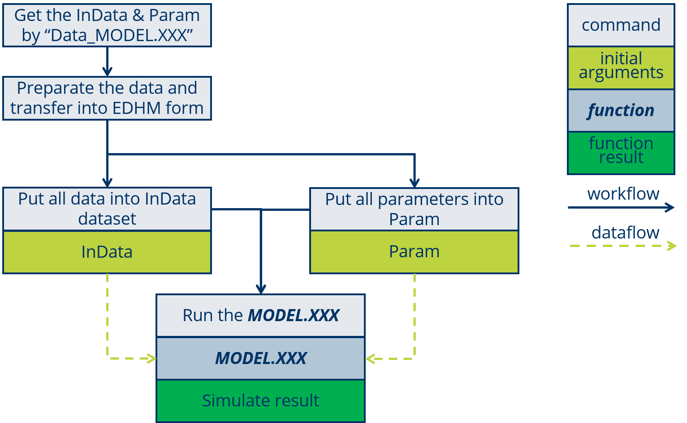
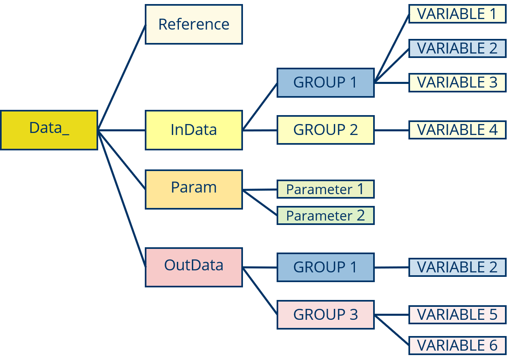
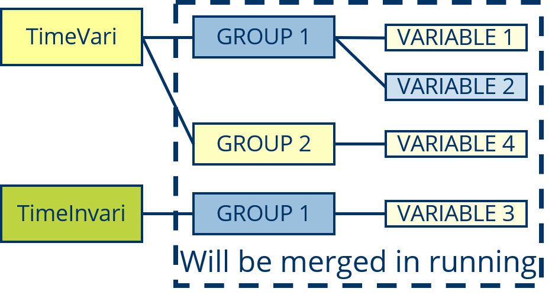
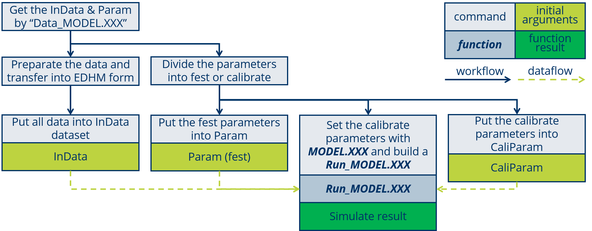
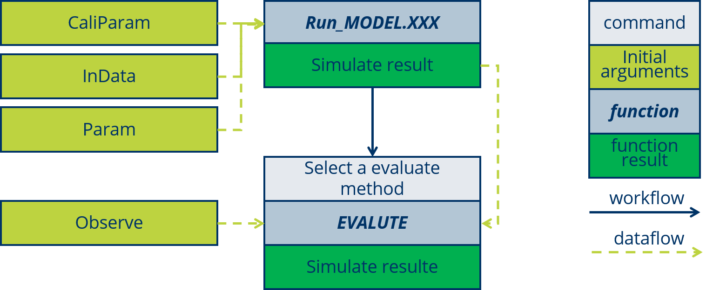
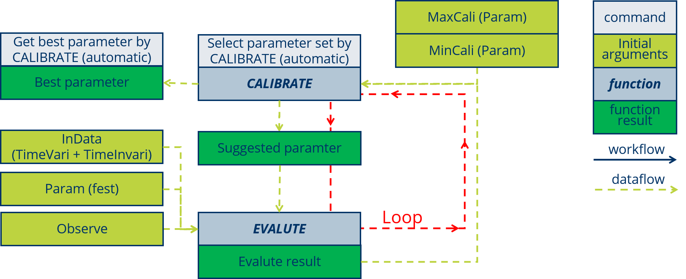
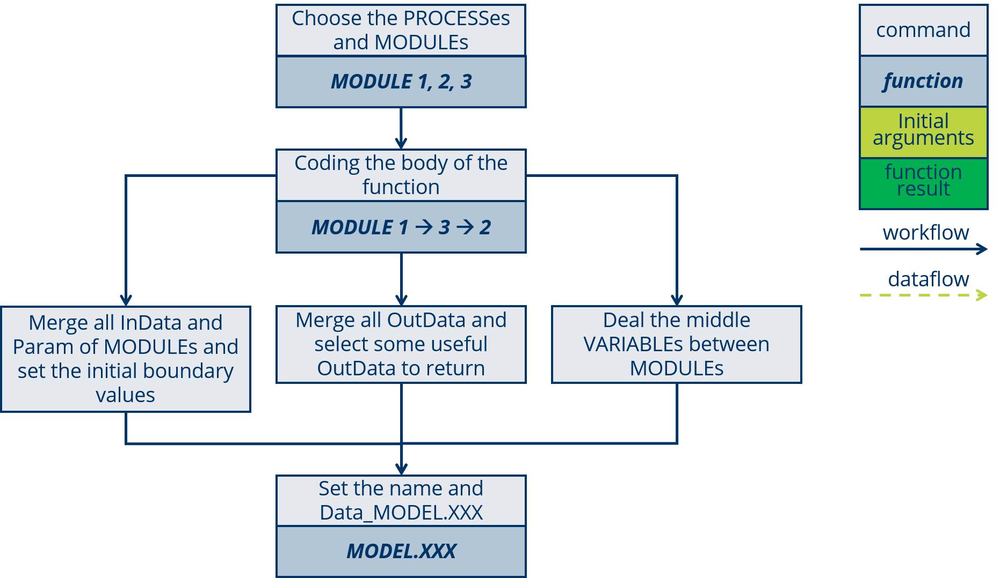
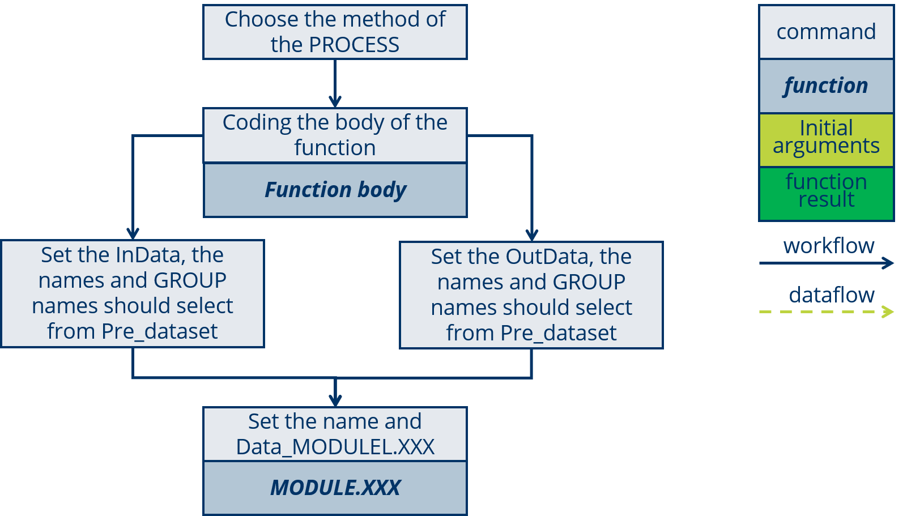

Chapter 2 Model Use and Develop
2.1 Basic Use of a complete MODELL
2.1.1 RUn a MODEL
The using of a MODEL will summarized as four steps:

- Get the InData & Param list by run
Data_MODEL.XXXin R, the list of “Data_” is structured as:

- Prepare the data and transfer into EDHM form and confirm a parameter set.
Please must mark the time-variable and time-invariable VARIABLEs.
Please use Data_XXX$InData$GROUP$VARIABLE check the VARIABLE structure, when the VARIABLE is not normal.
- Input the prepared data to InData and Param.
For the time-variable VARIBLE must put into “TimeVari”, some like “VARIABLE 1, 2” belong to “GROUP 1” and time-variable, “VARIABLE 3” belong to also “GROUP 1” but time-invariable. Then they will be structured as:

The code for this exemple like:
TimeVari <- t_vari.hm.list()
TimeVari$GROUP1$VARIABLE1 <- mydata1
TimeVari$GROUP1$VARIABLE2 <- mydata2
TimeVari$GROUP2$VARIABLE4 <- mydata3
TimeInVari <- hm.list()
TimeInVari$GROUP1$VARIABLE3 <- mydata4
Param <- list()
Param$Paramter1 <- myparam1
Param$Paramter2 <- myparam2- Run the MODEL.
my_simu <- MODELL.XXX(TimeVari, TimeInVari, Param)2.1.2 set a Run_MODEL
In EDHM the parameters are index with the parameters name, but when we calibrate the parameters, we set the parameters in a vector, also for some research not all of the parameters need to calibrate, so there is a setting about parameters from vector transfer to list.
There shows the function Run_MODEL.SERR:
Run_Model.SERR <- function(TimeVariData, TimeInvariData, Param,
ParamterCalibrate){
## 1.0 snow##
Param$Max_Snow_T = ParamterCalibrate[1]
Param$Min_Snow_T = ParamterCalibrate[2]
Param$Factor_Day_degree = ParamterCalibrate[3] ## 2.7-12 [mm]
Param$Base_T = ParamterCalibrate[4] ## -2-5.5 [Cel]
## 1.1 ET ##
Param$CanopyCapacity = ParamterCalibrate[5]
Param$Coeff_ET_Capacity_Attenuat = ParamterCalibrate[6]
## 1.2 Runoff ##
Param$Threshold_Runoff = ParamterCalibrate[7]
Param$Ratio_Runoff = ParamterCalibrate[8]
Param$Ratio_GW_Storage = ParamterCalibrate[9]
Param$Coeff_GW_Storage_Attenuat = ParamterCalibrate[10]
## 1.3 Route ##
Param$UPPaList = ParamterCalibrate[11:17]
Result_ <- MODEL.SERR(TimeVariData, TimeInvariData, Param)
Result <- Result_$Route$StaFlow
return(Result)
}The workflow is show in the following figure:

2.1.3 Evaluate
Usually bye EVALUTE evalute the simulation results, but when we kalibrate the parameters, the EVALUTE evalute actully the parameters, those need to calibrate, so the EVALUTE based on the Run_MODEL.
The data flow is show in the following figure:

The EVALUTE functions is very easy to code, and the R Package hydroGOF (Mauricio Zambrano-Bigiarini 2020) is also recommend, in that there are some commen evalute methods for hydrological field, some like NSE, KGE, mae and soon.
EVALUTE() is a function in EDHM, by setting EVALUTE(..., fct_Evaluate = NSE) set the evaluate method. The argument fct_Evaluate require a function, so give it just the function name without the quotation marks into a charater.
2.1.4 Calibrate
The CALIBRATE help us choose the best parameter-set from a range, CALIBRATE will by the goodness of evaluate results and some algorithms to choose the parameters, at the end of algorithms find the best parameters-set, the “it” thinks.
The data flow is show in the following figure:

The R package mcga (Satman 2018) is recommend to calibrate, it is a Machine coded genetic algorithm to calibrate multi-parameters problem.
mcga2() is the main function, this function require at least three arguments: fitness a function that can return a value to evaluate the parameters-set, min minimal parameters-set in vector, max maximal parameters-set in vector, and other arguments those fitness require. The fitness in EDHM is just the function EVALUTE().
For example:
Fitness_GA = mcga2(fitness = EVALUATE,
fct_Run_Model = Run_Model.SERR,
TimeVariData = TimeVariData_run,
TimeInvariData = TimeInvariData,
Paramter_fest = Param_Base,
Observe = Observe_run,
warmUPN = 500,
fct_Evaluate = KGE,
min = ParamterCalibrateMin,
max = ParamterCalibrateMax,
popSize = 15,
maxiter = 18)2.1.5 Check the InData list
After the preparation of data must check the data, weather there is NA or other unlogical data.
The check tools will provide in the fast future.
2.2 Coupling a new Model with MODULE
Generally researcher design a model for a basin or some specific environment, so in a new research region, we can use one model, the designed for this kind of basin or watershed and calibrate the empirical parameters. But sometimes by the calibrate of parameters can also not solve the problem, so researcher need change some of process to promote the simulation. In EDHM researcher are can use many MODULEs to build a new MODEL. The available PROCESSes and MODELs is show in the table.
The coupling of a new MODEL will summarized as six steps:

In this section a example MODEL.GR4J will show for explain.
2.2.1 Choose MODULE
After the new designed model, there will required some PROCESSes, check the PROCESS and MODULE table and choose the relevant Methods to those PROCESS, also say the MODULEs. In this table you can click the MODULE name check the InData, Param and OutData in order to better understand the MODULE, also the literature of this Method is accessible.
The MODULEs ReferenceET.Hargreaves, ActualET.Gr4j, RUNOFF.Gr4j and ROUTE.Gr4j are selected.
2.2.2 Set the Order
Every PROCESS (MODULE) have the clear physical meaning, so by those you should set a correct order of those MODULEs.
The PROCESS ReferenceET is certainly before ActualET, and ROUTE is the end PROCESS of a rainfall-runoff model. So the MODULE will set as:
## ET
ETOut <- ActualET.Gr4j(InData, Param) # S2
## Runoff
RFOut <- RUNOFF.Gr4j(InData, Param) # S2
## Route
RTOut <- ROUTE.Gr4j(InData, Param) # S22.2.3 Deal with InData and Param
“Data Space” and “Parameter List” are the data-flow of the MODEL, the “Data Space” will save all of the VARIABLEs, it can be readied by the MODULE and use the function left_merge() write the OutData of MODULE into it.
In the running of MODEL the InData will set into StepData for every step.
The step will divided into five sub-steps:
Get the parameters from Param; [# S3-0]
Initialize the StepData; [# S3-1]
Set the initial boundary data; [# S3-2]
Make loop for every step; [# S3-3]
Merge the OutData into “Data Space” (StepData). [# S3-4]
PeriodN <- Param$PeriodN # S3-0
GridN <- Param$GridN # S3-0
## StepData
StepData <- new('hm.list') # S3-1
StepData$Ground$MoistureVolume <- rep(0, GridN) # S3-2
StepData <- left_merge(StepData, TimeInvariData) # S3-2
for(i in 1: PeriodN){ # S3-3
Param$time_step_i <- i
StepData <- left_merge(StepData, TimeVariData[i]) # S3-4
## ET
ETOut <- ActualET.Gr4j(StepData, Param) # S2
StepData <- left_merge(StepData, ETOut) # S3-4
## Runoff
RFOut <- RUNOFF.Gr4j(StepData, Param) # S2
StepData <- left_merge(StepData, RFOut)
StepData$Route$WaterSource <- StepData$Groud$Runoff * StepData$GridData$Area / Param$TimeStepSec / 1000
## Route
RTOut <- ROUTE.Gr4j(StepData, Param) # S2
StepData <- left_merge(StepData, RTOut) # S3-4
}2.2.4 Set OutData
In EDHM which VARIABLE need to output are enable to choose, those are useful for research.
The step will divided into two sub-steps:
Initialize the OutData; [# S4-1]
Transfer from StepData into OutData. [# S4-2]
PeriodN <- Param$PeriodN # S3-0
GridN <- Param$GridN # S3-0
## StepData
StepData <- new('hm.list') # S3-1
StepData$Ground$MoistureVolume <- rep(0, GridN) # S3-2
StepData <- left_merge(StepData, TimeInvariData) # S3-2
## OutData
OutData <- new("t_vari.hm.list") # S4-1
OutData$Route$StaFlow <- t_vari.array(0, c(PeriodN, GridN)) # S4-1
for(i in 1: PeriodN){ # S3-3
Param$time_step_i <- i
StepData <- left_merge(StepData, TimeVariData[i]) # S3-4
## ET
ETOut <- ActualET.Gr4j(StepData, Param) # S2
StepData <- left_merge(StepData, ETOut) # S3-4
## Runoff
RFOut <- RUNOFF.Gr4j(StepData, Param) # S2
StepData <- left_merge(StepData, RFOut)
StepData$Route$WaterSource <- StepData$Groud$Runoff * StepData$GridData$Area / Param$TimeStepSec / 1000
## Route
RTOut <- ROUTE.Gr4j(StepData, Param) # S2
StepData <- left_merge(StepData, RTOut) # S3-4
OutData[i] <- StepData # S4-2
}2.2.5 Deal with middle VARIABLE
The InData of MODULE naming by the regulation, that can clear many works, but there still are some VARIABLE those need to deal.
In this Example, the Ground$Runoff is in [mm] calculated but Route$WaterSource require a unit [m3/s], so people must transfer the two VARIABLEs.
## Runoff
RFOut <- RUNOFF.Gr4j(StepData, Param) # S2
StepData <- left_merge(StepData, RFOut)
StepData$Route$WaterSource <- StepData$Groud$Runoff * StepData$GridData$Area / Param$TimeStepSec / 1000 # S5
## Route
RTOut <- ROUTE.Gr4j(StepData, Param) # S2
StepData <- left_merge(StepData, RTOut) # S3-42.2.6 Name and Data_
At the end only require a name for this MODEL, most importantly please not forget make the Data_ dataset.
MODEL.GR4J <- function(TimeVariData, TimeInvariData, Param, ...) {
PeriodN <- Param$PeriodN # S3-0
GridN <- Param$GridN # S3-0
## StepData
StepData <- new('hm.list') # S3-1
StepData$Ground$MoistureVolume <- rep(0, GridN) # S3-2
StepData <- left_merge(StepData, TimeInvariData) # S3-2
## OutData
OutData <- new("t_vari.hm.list") # S4-1
OutData$Route$StaFlow <- t_vari.array(0, c(PeriodN, GridN)) # S4-1
for(i in 1: PeriodN){ # S3-3
Param$time_step_i <- i
StepData <- left_merge(StepData, TimeVariData[i]) # S3-4
## ET
ETOut <- ActualET.Gr4j(StepData, Param) # S2
StepData <- left_merge(StepData, ETOut) # S3-4
## Runoff
RFOut <- RUNOFF.Gr4j(StepData, Param) # S2
StepData <- left_merge(StepData, RFOut)
StepData$Route$WaterSource <- StepData$Groud$Runoff * StepData$GridData$Area /
Param$TimeStepSec / 1000 # S5
## Route
RTOut <- ROUTE.Gr4j(StepData, Param) # S2
StepData <- left_merge(StepData, RTOut) # S3-4
OutData[i] <- StepData # S4-2
}
return(OutData)
}2.3 Design a new MODULE
Not only the coupling of MODULEs but also design a new MODULE very easy with EDHM. And one point need to mark that the MODULE should support the vectorization-arithmetic.
The workflow show in following figure:
 The design of a new MODULE will summarized as five steps:
In this section will show the example ActualET.Gr4j.
2.3.1 Method and Formula
The method and formulas for a PROCESS can collected from all kinds of books and literature.
The calculate method of GR4J shows in the link.
2.3.2 Coding the body
By the formulas can program the function body easily.
judge_PbE <- P > E # S1
Pn <- judge_PbE * (P - E) # S1
En <- (!judge_PbE) * (E - P) # S1
Es <- S * (2 - S / X1) * tanh(En / X1) / (1 + (1 - S / X1) * tanh(En / X1)) # S12.3.3 Set In/OutData and Parameter
The most important of the design is the naming of InData and OutData, all of them should select from Pre_dataset, include the GROUP name and VARIABLE name, when the VARIABLE is only used for this MODULE, the naming is not rigid.
X1 <- Param$Gr4j_X1 # S2-1
E <- InData$Evatrans$RET # S2-1
S <- InData$Ground$MoistureVolume # S2-1
P <- InData$Prec$Precipitation # S2-1
judge_PbE <- P > E # S1
Pn <- judge_PbE * (P - E) # S1
En <- (!judge_PbE) * (E - P) # S1
Es <- S * (2 - S / X1) * tanh(En / X1) / (1 + (1 - S / X1) * tanh(En / X1)) # S1
return(list(Evatrans = list(AET = Es), Prec = list(Precipitation = Pn))) # S2-22.3.4 Name and Data_
The name of a MODULE should base on the PROCESS name and add the mark of this method.
In the example the PROCESS is “ActualET”, and the method can mark as “Gr4j”, so get the MODLUE name “ActualET.Gr4j”
ActualET.Gr4j <- function(InData, Param, ...){ # S3
X1 <- Param$Gr4j_X1 # S2-1
E <- InData$Evatrans$RET # S2-1
S <- InData$Ground$MoistureVolume # S2-1
P <- InData$Prec$Precipitation # S2-1
judge_PbE <- P > E # S1
Pn <- judge_PbE * (P - E) # S1
En <- (!judge_PbE) * (E - P) # S1
Es <- S * (2 - S / X1) * tanh(En / X1) / (1 + (1 - S / X1) * tanh(En / X1)) # S1
return(list(Evatrans = list(AET = Es), Prec = list(Precipitation = Pn))) # S2-2
}The Data_ActualET.Gr4j can be write as:
Data_ActualET.Gr4j <-
list(ref_title = 'Improvement of a parsimonious model for streamflow simulation',
ref_bib = 'Perrin.2003',
InData = left_merge(t_vari.hm.list(),
list(Evatrans = list(RET = t_vari.array(0, c(3))),
Ground = list(MoistureVolume = t_vari.array(0, c(3))),
Prec = list(Precipitation = t_vari.array(0, c(3))))),
Param = list(Gr4j_X1 = c(0.1, 9.99, 'mm')),
OutData = left_merge(t_vari.hm.list(),
list(Evatrans = list(AET = t_vari.array(0, c(3))),
Prec = list(Precipitation = t_vari.array(0, c(3))))))References
Mauricio Zambrano-Bigiarini. 2020. HydroGOF: Goodness-of-Fit Functions for Comparison of Simulated and Observed Hydrological Time Series. https://github.com/hzambran/hydroGOF.
Satman, Mehmet Hakan. 2018. Mcga: Machine Coded Genetic Algorithms for Real-Valued Optimization Problems. https://CRAN.R-project.org/package=mcga.